Modo Estricto
Se trata de una implementación del "ES6" para fomentar el uso de las buenas prácticas y la correcta sintaxis de JavaScript, esto debido a que para el momento de creación de este, gran parte de las páginas de internet poseían errores en su código llegando al punto de que incluso podían depender de estos errores para funcionar correctamente.
Para contrarrestar esto se desarrolló el "modo estricto" (use strict), el cual ajusta el comportamiento de JavaScript para que:
-
Convierte los errores sintácticos en excepciones: JavaScript por defecto puede ejecutarse sin problemas aun con ciertos errores leves que el lenguaje está preparado para solventar.
Como por ejemplo al declarar una variable sin definir el tipo de esta, en cuyo caso por defecto se le asignará el tipo "var". Este tipo de errores simples que son solventados por JavaScript detonarían un error si se tiene el modo estricto activado, ya que este no solventa los errores, en su lugar simplemente dispara el error por consola.
Por lo tanto el modo estricto no permite los errores de sintaxis en el código.
-
Mejora la optimización de los errores y mejora el tiempo de carga: Esto debido a que el modo estricto mejora el manejo de errores, lo cual por sí mismo ya es suficiente para mejorar el rendimiento de la página y su carga.
-
Evita la sintaxis usada en versiones anteriores a "ES6": Esto debido a que la sintaxis de esa época está plagada de errores y malas prácticas, mientras que en "ES6" se aplicaron modificaciones para mejorar la sintaxis e incorporar buenas prácticas.
-
No permite que el programador realice una mala sintaxis: Directamente fuerza al programador a realizar las buenas prácticas y respetar la sintaxis reglamentaria después de "ES6", cosa que no sucede en el JavaScript por defecto.
El modo estricto en sí es una instrucción para el intérprete de JavaScript, en la que se le indica que debe aplicar ciertas reglas a la hora de interpretar el código.
El modo estricto se puede aplicar ya sea de forma global en todo el documento o en un bloque en particular del código. Para aplicarlo de forma global es necesario ingresar las palabras claves "use strict" entre comillas (" ") como primera instrucción al principio del documento JavaScript.
Ejemplo
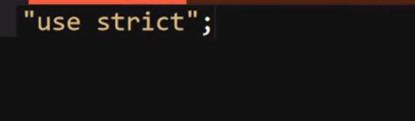
Del mismo modo, para definirlo dentro de un bloque de código con un alcance local también es necesario definirlo como primera instrucción de este. Por lo tanto, para indicar el uso del modo estricto ya sea en todo el documento o en un único bloque de código es necesario definirlo como primera instrucción, de lo contrario el intérprete lo considerará un dato más.
Ejemplo
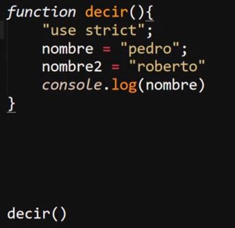
Efectos del Modo Estricto
-
Las variables deben declararse: Por defecto JavaScript asigna el tipo "var" a las variables a las que no se les defina el tipo, con el modo estricto esto no pasa, en su lugar se dispara un error en caso de que no se definió el tipo de variable.
Ejemplo
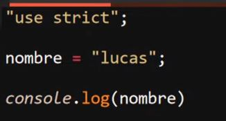
Resultado
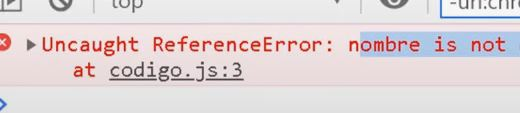
-
Modificar las Propiedades (defineProperty() y writable): "defineProperty()" se trata de una forma de declarar las propiedades. En el siguiente ejemplo, se define un objeto al que se le aplica "defineProperty()" para añadirle una propiedad de nombre "nombre" y con un valor "pedro".
Ejemplo
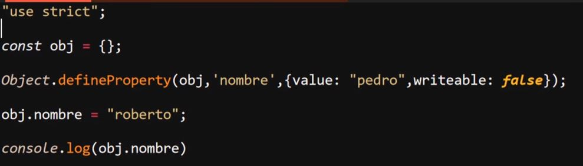
Definir la propiedad de esta forma tiene la ventaja de permitir configurar de una forma mucho más detallada, permitiendo también el definir el estatus de la propiedad "writable", la cual indica si una propiedad es de tipo solo escritura, para lo cual se le define con un valor "false". De ese modo la propiedad no podrá ser modificada ni sobreescrita, y de intentarlo se disparará un error.
Resultado
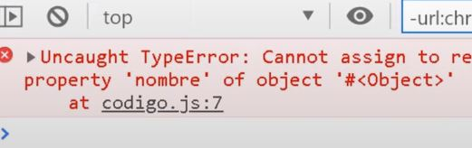
Mientras que en el JavaScript común esta funcionalidad se comportaría igual pero con la diferencia de que no se dispararía el error, por lo tanto si el programador realiza el error de intentar sobreescribir la propiedad no habrá mensaje de error que lo indique.
-
Agregar Propiedades: En el JavaScript común cuando se usa la propiedad preventExtensions(), la cual impide que se añadan nuevas propiedades a un objeto una vez es usada, no se detona ningún tipo de error, simplemente las nuevas propiedades que se deseen añadir no se ejecutarán. Mientras que con el modo estricto se disparará un error en consola notificando al programador si se intenta añadir una nueva propiedad a un objeto luego de usar preventExtensions().
Ejemplo
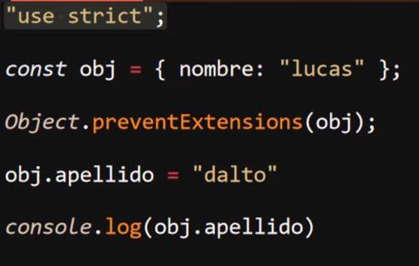
Resultado
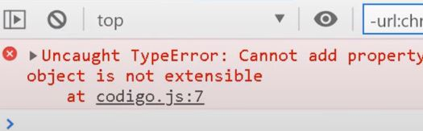
-
No se Puede Añadir Propiedades a un String: Normalmente en JavaScript si se intenta añadir una propiedad a un "string" no pasa nada, simplemente el "string" no es capaz de ejecutar la propiedad, sin embargo con el uso del modo estricto este tipo de errores disparará un error en consola.
Ejemplo
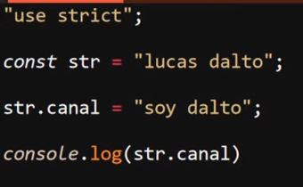
-
No existen las múltiples variables en una expresión: En JavaScript si una función posee dos parámetros llamados de la misma forma esta se ejecuta sin problema, simplemente que el parámetro que se empleará dentro de la función será el último a la derecha.
Por otra parte con el modo estricto la función ni siquiera se podrá definir, siempre que esta posea dos parámetros llamados igual se disparará un error en consola.
Ejemplo
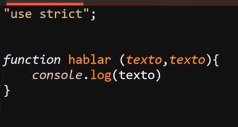
-
Delete en objetos o variables: Delete es una palabra clave que permite eliminar propiedades de un objeto, ese es su correcto uso. En JavaScript normal si se intenta usar "delete" para eliminar algo que no sea una propiedad como un objeto o una variable simplemente esto no ocurre (ya que no se permite) y se continúa con la ejecución.
Por otro lado con el modo estricto esto desencadena un error en consola que impide la ejecución.
Ejemplo
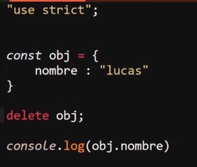
-
Las Palabras Reservadas no Pueden ser Usadas como Nombres de Variables: En la mayoría de los casos, a menos que la palabra reservada sea de gran importancia, JavaScript perdona estos errores y permite el uso de la palabra reservada como nombre de la variable, sin embargo con el modo estricto esto no ocurre, sino que en su lugar se dispara un error.
Ejemplo
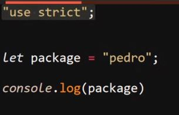
Nota: no todas las palabras reservadas están registradas en esta función del modo estricto.
-
Cambia el THIS de los objetos: Recordar que en los constructores de los objetos se utiliza el elemento "this", al usar el modo estricto estos elementos "fallan" (Esto se aborda en el siguiente apartado sobre las funciones).
-
Números "octales" con una "o" adelante y no existe with: Los números octales son aquellos que se rigen por ocho símbolos.
Ejemplo
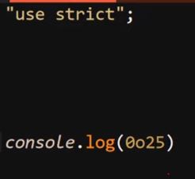
-
Arguments y Eval no pueden ser variables: Ambos elementos se desglosan en los siguientes temas ya que pertenecen a los apartados de las funciones.